지적기사 (2009-05-10 기출문제)
1과목: 지적측량
1. 촉판측량방법에 의한 세부측량의 기준 및 방법에 대한 설명이 옳지 않은 것은?
- 지적도를 비치하는 지역에서의 거리측정단위는 5cm로 한다.
- 임야도를 비치하는 지역에서의 거리측정단위는 50cm로 한다.
- 광파조준의를 사용하여 교회법으로 시행하는 경우 방향선의 도상길이는 30cm 이하로 할 수 있다.
- 지적측량기준점 또는 기지점이 부족한 때에는 측량상 필요한 위치에 보조점을 설치하여 활용한다.
(정답률: 알수없음)

2. 원점을 이용한 지적삼각점의 평면직각종횡선수치를 지적측량에 사용하기 위하여 종ㆍ횡선수치에 각각 얼마를 가산하여야 하는가? (단, 원점이란 지적측량에 사용하는 좌표의 원점으로 동부ㆍ중부ㆍ서부원점을 말하여, 제주도 지역은 고려하지 않음)
- 종선수치:30만m, 횡선수치:40만m
- 종선수치:20만m, 횡선수치:50만m
- 종선수치:40만m, 횡선수치:30만m
- 종선수치:50만m, 횡선수치:20만m
(정답률: 알수없음)
3. 삼각형의 세 변의 길이가 각각 32.28m, 30.58m, 27.64m일 때 면적은 얼마인가?
- 367.83m2
- 389.39m2
- 398.38m2
- 412.83m2
(정답률: 알수없음)
4. 그림과 같이
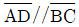
인 사변형 ABCD를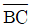
에 수직인 직선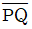
로 분할하여 면적(F)이 2.200m2 가 되는 사변형 ABPQ를 구하고자 할 때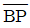
의 길이는? (단,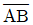
(l)=20m, ∠ABP(β)=120°)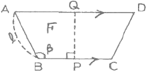
- 117.15m
- 122.02m
- 228.66m
- 249.03m
(정답률: 알수없음)
5. 다음 중 지적측량의 방법에 해당되지 않는 것은?
- 전파기측량
- 사진측량
- 위성측량
- 천문측량
(정답률: 알수없음)
6. 경위의측량방법으로 세부측량을 한 지역의 필지별 면적 측정 방법은?
- 전자면적측정기법
- 좌표면적계산법
- 도산삼변법
- 방사법
(정답률: 알수없음)
7. 임야도를 비치하는 지역의 세부측량에 있어서, 지적도의 축척에 의한 측량성과를 임야도의 축척으로 측량결과도에 표시하는 방법을 옳게 설명한 것은?
- 임야도의 축척에 의한 임야 경계선의 좌표를 구하여 임야측량결과도에 전개하여야 한다.
- 지적도의 축척에 의한 임야 분할선의 좌표를 구하여 임야측량결과도에 전개하여야 한다.
- 임야 경계선과 도곽선을 접합하여 임의로 임야측량 결과도에 전개하여야 한다.
- 지적도의 축척에 의한 측량결과도에 표시된 경계점의 좌표를 구하여 임야측량결과도에 전개하여야 한다.
(정답률: 알수없음)
8. 경위의측량방법으로 세부측량을 실시한 경우 측량대상 토지의 경계점간 실측거리가 100.25m일 때, 이 거리와 경계점의 좌표에 의하여 계산한 거리의 교차는 최대 얼마이내이어야 하는가?
- 11cm 이내
- 12cm 이내
- 13cm 이내
- 14cm 이내
(정답률: 알수없음)
9. 지적삼각측량에서 원점에서부터 두 점 A, B까지의 횡선거리가 각각 8km와 16km일 때 축척계수(K)는 얼마인가? (단, R=6772.2km)
- 1.000002772
- 1.000002742
- 1.000001773
- 1.000001725
(정답률: 알수없음)
10. 도선법과 다각망도선법에 의한 지적도근점 관측에서 시가지지역, 축척변경지역과 경계점좌표등록부 시행지역의 수평각 관측방법은?
- 방향각법
- 교회법
- 방위각법
- 배각법
(정답률: 알수없음)
11. 토탈스테이션을 이용한 작업의 장점으로 가장 거리가 먼 것은?
- 각과 거리를 동시에 측정할 수 있다.
- 전자기록 장치를 사용할 수 있어 작업효율이 높다.
- 날씨나 장애물의 영향을 받지 않아 항상 작업이 가능하다.
- 측정에 있어 사용자에 따른 눈금읽기 오차로 인한 실수를 피할 수 있다.
(정답률: 알수없음)
12. 지적확정측량결과도 작성시 기재사항으로 거리가 먼 것은?
- 경계점간 계산거리 및 실측거리
- 경계에 지상건물 등이 걸리는 경우에는 그 위치현황
- 확정된 필지의 경계(경계점좌표의 전개하여 연결한 선 및 면적)
- 지적측량기준점 및 그 번호와 지적측량기준점간 방위간 및 거리
(정답률: 알수없음)
13. 광파기측량방법에 의한 지적삼각점의 점간거리를 5회 측정한 평균치가 3576.89m 일 때 측정치의 허용교차(측정치의 최대치와 최소치의 교차의 허용범위)는?
- 2cm
- 3cm
- 4cm
- 5cm
(정답률: 알수없음)
14. 다각망도선법에 의한 지적삼각보조점의 관측에 있어 도선별 평균방위각과 관측방위각의 폐색오차는 얼마 이내로 하여야 하는가? (단, 폐색변을 포함한 변의 수는 4이다.)
- ±10초 이내
- ±20초 이내
- ±30초 이내
- ±40초 이내
(정답률: 알수없음)
15. 다음 중 최소제곱법에 의한 확률법칙에 의해 처리할 수 있는 오차는?
- 정오차
- 부정오차
- 착각
- 과대오차
(정답률: 알수없음)
16. 다각망도선법에 의한 지적삼각보조점의 점간거리는 어떤 거리에 의하여 게산하여야 하는가?
- 점간 실제 수평거리
- 점간 실제 경사거리
- 원점에 투영된 평면거리
- 기준면상 거리
(정답률: 알수없음)
17. 각 내각의 크기가 아래 그림과 같을 때 CD의 방위각은? (단, AB의 방위각은 125° 27‘임)
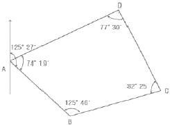
- 153° 08‘
- 153° 38‘
- 333° 08‘
- 333° 38‘
(정답률: 알수없음)
18. 배각법에 의한 지적도근점의 각도관측 시, 측각오차의 배분 방법으로 옳은 것은?
- 측선장에 비례하여 각 측선의 관측각에 배분한다.
- 측선장에 반비례하여 각 측선의 관측각에 배분한다.
- 변의 수에 비례하여 각 측선의 관측각에 배분한다.
- 변의 수에 반비례하여 각 측선의 관측각에 배분한다.
(정답률: 알수없음)
19. 다음 중 지적측량의 절차가 옳은 것은?
- 계획의 수립→준비 및 현지답사→선점 및 조표→관측 및 계산과 성과표의 작성
- 계획의 수립→선점 및 조표→준비 및 현지답사→관측 및 계산과 성과표의 작성
- 계획의 수립→선점 및 조표→관측 및 계산과 성과표의 작성→준비 및 현지답사
- 계획의 수립→준비 및 현지답사→관측 및 계산과 성과표의 작성→선점 및 조표
(정답률: 알수없음)
20. 경위의측량방법에 의한 지적삼각점의 수평각 관측은 몇 대회의 방향관측법에 의하여야 하는가?
- 2대회
- 3대회
- 5대회
- 6대회
(정답률: 알수없음)
2과목: 응용측량
21. 중복된 같은 고도의 항공사진이 연직사진일 경우 시차차로 알 수 있는 것은?
- 토지의 이용 상태
- 두 점간의 높이
- 사진의 축척
- 1매의 사진이 포용하는 면적
(정답률: 알수없음)
22. DGPS(Differential GPS)를 측위에 대한 설명으로 틀린 것은?
- 기본 GPS에 비해 정밀도는 떨어지나 배나 비행기의 항법, 자동차 등에 응용될 수 없는 한계가 있다.
- 제 2의 장치가 수신기 근처에 존재하여 지금 현재 수신받는 자료가 얼마만큼 빗나간 양이라는 것을 수신기에게 알려줌으로써 위치결정의 오차를 극소화 시킬 수 있는데, 바로 이 방법이 DGPS라고 불리는 기술이다.
- DGPS는 두 개의 GPS 수신기를 필요로 하는데, 하나의 수신기는 정지해있고(stationary) 다른 하나는 이동을(roving) 하면서 위치측정을 시행한다.
- 정지한 수신기가 DGPS 개념의 핵심이 되는 것으로 정지 수신기는 실제 위성을 이용한 측정값과 이미 정밀하게 결정된 실제 값과의 차이를 계산한다.
(정답률: 알수없음)
23. 완화곡선에 대한 설명으로 틀린 것은?
- 반지름은 그 시작점에서 ∞이고, 종점에서는 원곡선의 반지름과 같다.
- 접선은 시점에서는 직선에, 종점에서는 원호에 접한다.
- 완화곡선 중 클로소이드 곡선은 철도에 주로 이용된다.
- 완화곡선에 연한 곡선반지름의 감소율은 캔트의 증가율과 같다.
(정답률: 알수없음)
24. 지표면에 기복이 있을 때 사진면에는 어떤 점을 중심으로 방사상의 기복변위가 생기는가?
- 연직점
- 지표
- 등각점
- 주점
(정답률: 알수없음)
25. 지성선 중 지표면이 낮거나 움푹 패인 점을 연결한 선으로 합수선이라고도 하는 것은?
- 능선
- 계곡선
- 경사변환선
- 최대경사선
(정답률: 알수없음)
26. 고저차를 구하는 방법으로 사용하는 것이 아닌 것은?
- 시거법(스타디아 측량)
- 중력에 의한 방법
- 평판의 앨리데이드에 의한 방법
- 수평표척에 의한 방법
(정답률: 알수없음)
27. 두 점 간의 거리가 2100m이고 곡률반지름(R)이 6370km, 빛의 굴절계수(k)가 0.14일 경우에 양차는?
- 0.25m
- 0.30m
- 0.32m
- 0.41m
(정답률: 알수없음)
28. DDP의 종류로 옳게 짝지어지지 않은 것은?
- HDOP-기하학적 정밀도 저하율
- PDOP-위치 정밀도 저하율
- RDOP-상대 정밀도 저하율
- VDOP-수직 정밀도 저하율
(정답률: 알수없음)
29. 다음 표는 갱내에서 수준측량을 실시한 결과이다. A점의 지반고가 224.590m일 경우 D점의 지반고는?
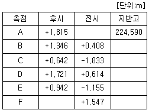
- 221.260m
- 227.920m
- 228.019m
- 229.641m
(정답률: 알수없음)
30. 표고 2000m의 비행기에서 초점거리 154mm의 사진기로 촬영한 수직항공사진의 축척은?
- 약 1/10000
- 약 1/13000
- 약 1/15000
- 약 1/18000
(정답률: 알수없음)
31. 수준측량에서 전ㆍ후시의 측량을 연결하기 위하여 전시, 후시를 함께 취하는 점은?
- 중간점
- 수준점
- 이기점
- 기계점
(정답률: 알수없음)
32. 노선측량에서 단곡선을 설치할 때 교각(I)=49° 31‘, 반지름=130m인 경우 옳은 것은?
- 접선길이=57.95m
- 중앙종거=11.95m
- 곡선길이=114.33m
- 장현길이=109.89m
(정답률: 알수없음)
33. 사진측량에 있어서 편위수정에 대한 설명으로 적합하지 않은 것은?
- 사진의 경사를 수정한다.
- 축척을 통일시키고 변위를 제거한다.
- 편위수정 조건에는 샤임플러그의 조건이 있다.
- 편위수정에는 2개의 표정점이 필요하다.
(정답률: 알수없음)
34. 종중복도 60%, 횡중복도 30%일 때 촬영 종기선의 길이와 촬영 횡기선의 길이의 비는?
- 6:3
- 1:2
- 3:1
- 4:7
(정답률: 알수없음)
35. 클로소이드(clothoid)에 대한 설명으로 틀린 것은?
- 클로소이드는 나선의 일종이다.
- 클로소이드의 모양은 하나밖에 없으나 매개변수 A를 변화시키면 크기가 다른 클로소이드가 무수히 많이 생긴다.
- 클로소이드 요소에는 길이의 단위를 가진 것과 단위가 없는 것이 있다.
- 클로소이드에서 R=2L이 되는 점을 특성점이라 한다.
(정답률: 알수없음)
36. 편각법으로 원곡선을 설치할 때 기점으로부터 교점까지의 거리=123.45m, 교각(I)=40° 20', 곡선반경(R)=100m일 때 시단현의 길이는? (단, 중심말뚝의 간격은 20m이다.)
- 13.28m
- 15.28m
- 9.72m
- 6.72m
(정답률: 알수없음)
37. 터널을 만들기 위하여 A, B 두점의 좌표를 측정한 결과 A점은 XA=1000.00m, YA=250.00mm, B점은 XB=1500.00m, YB=1000.00m이면 AB의 방위각은?
- 56° 18‘ 36“
- 33° 41‘ 24“
- 232° 25‘ 53“
- 322° 25‘ 23“
(정답률: 알수없음)
38. 지형도로서 활용할 수 없는 것은?
- 면적의 계산
- 토량의 계산
- 토지의 기복상태의 조사
- 지적도의 복원
(정답률: 알수없음)
39. 카메라의 초점거리 153mm, 촬영경사 5°로 평지를 촬영한 사진이 있다. 이 사진의 등각점은 주점으로부터 최대경사선 상의 몇 mm인 곳에 있는가?
- 6.68mm
- 7.68mm
- 8.68mm
- 9.68mm
(정답률: 알수없음)
40. 점 A의 표고는 각각 110.5m, 130.5m, 130.8m이고, AB간의 수평거리는 100m이다. 120m 등고선이 통과하는 위치는 A점으로부터 수평거리로 얼마인가?
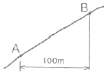
- 48.28m
- 46.80m
- 55.28m
- 62.72m
(정답률: 알수없음)
3과목: 토지정보체계론
41. 다음 중 PBLIS의 개발 목적으로 타당하지 않은 것은?
- 지적 재조사 기반 확보
- 토지관련 서비스 제공
- 행정의 능률성 제고
- LMIS와의 통합
(정답률: 알수없음)
42. 다음 중 공간자료 교환포맷인 SDTS에 관한 설명이 옳지 않은 것은?
- 공간자료 간의 자료 독립성 확보를 목적으로 한다.
- 다양한 공간데이터의 교환 및 공유를 가능하게 한다.
- 우리나라 NGIS의 공통 데이터 교환 포맷이다.
- 공간자료의 가치확대에 중요한 역할을 한다.
(정답률: 알수없음)
43. 토지대장과 같은 속성정보를 컴퓨터에 입력하는 방법으로 가장 일반적인 것은?
- 스캐너
- 디지타이저
- 플로터
- 키보드
(정답률: 알수없음)
44. 다음 중 PBLIS를 구성하는 시스템에 해당하지 않는 것은?
- 지적측량성과작성시스템
- 지적측량시스템
- 지적행정정보시스템
- 지적공부관리시스템
(정답률: 알수없음)
45. 다음의 지적관련 정보 중에서 도형자료로 활용할 수 있는 것은?
- 필지의 소재지
- 필지의 지번
- 필지의 경계
- 필지의 개별공시지가
(정답률: 알수없음)
46. 벡터자료의 저장 모형 중 위상(Topology)모형에 대한 설명으로 옳지 않은 것은?
- 공간 객체 간의 위상정보를 저장하는데 보편적으로 사용되는 방식이다.
- 좌표데이터만을 사용할 때보다 다양한 공간분석이 가능하다.
- 인접한 폴리곤 간의 공통 경계는 각각의 폴리곤에 대하여 한 번씩 반드시 두 번 기록되어야 한다.
- 다각형의 형상(shape), 인접성(neighborhood), 계급성(hierarchy)을 묘사할 수 있는 정보를 제공한다.
(정답률: 알수없음)
47. 다음 중 지적도면을 전산화함에 있어 정비하여야 할 사항과 가장 거리가 먼 것은?
- 도면번호 정비
- 도곽선 정비
- 소유지 정비
- 경계 정비
(정답률: 알수없음)
48. 다음 중 사용자가 데이터베이스에 접근하여 데이터를 처리할 수 있도록 하는 것으로 데이터의 검색, 삽입, 삭제 및 갱신 등과 같은 조작을 하는데 사용되는 데이터 언어는?
- DDL(Data Definition Language)
- DML(Data Manipulation Language)
- DCL(Data Control Language)
- DLL(Data Link Language)
(정답률: 알수없음)
49. 도로, 상하수도, 전기시설 등의 자료를 수치 지도화하고 시설물의 속성을 입력하여 데이터베이스를 구축함으로써 시설물 관리활동을 효율적으로 지원하는 시스템은?
- LIS(Land Information System)
- FM(Facility Management)
- UIS(Urban Information System)
- CAD(Computer-Aided Drafting)
(정답률: 알수없음)
50. 데이터베이스 관리시스템(DBMS)에 대한 설명이 옳지 않은 것은?
- 다른 자료 저장 시스템에 비해 시스템의 구성이 단순하여 그로 인한 자료의 손실 가능성이 낮다.
- DBMS에서 제공되는 서비스 기능을 이요하여 새로운 응용프로그램의 개발이 용이하다.
- 다른 사용자와 함께 자료호환을 자유로이 할 수 있어 효율적이다.
- 직접적으로 사용자와의 연계를 위한 기능을 제공하여 복잡하고 높은 수준의 분석이 가능하다.
(정답률: 알수없음)
51. 크기가 다른 정사각형을 이용하며, 공간을 4개의 동일한 면적으로 분할하는 작업을 하나의 속성값이 존재할 때까지 반복하는 래스터자료 압축 방법은?
- 런렝스코드(Run-length code) 기법
- 체인코드(Chain code) 기법
- 블록코드(Block code) 기법
- 사지수형(Quadtree) 기법
(정답률: 알수없음)
52. 다음 중 디지타이징 방식과 스캐닝 방식을 이용하여 도형 정보를 취득하는 것에 대한 설명이 옳지 않은 것은?
- 디지타지저와 스캐너 장비는 기계적인 오차가 존재한다.
- 자동으로 래스터자료를 벡터자료로 변환할 경우 오차가 발생할 수 있다.
- 디지타이저를 이용하여 작업자가 수동으로 도면을 독취하는 경우 작업자의 숙련도가 오차에 영향을 준다.
- 디지타이저를 이용하여 도면을 입력할 때 기준점이나 지적도의 좌표를 잘못 지정하더라도 독취자료의 일부분에만 오차가 발생한다.
(정답률: 알수없음)
53. 지적전산정보처리조직 담당자의 사용자번호 및 비밀번호에 관한 설명으로 옳은 것은?
- 사용자의 비밀번호가 누설될 우려가 있는 때에는 즉시 이를 변경하여야 한다.
- 필요한 경우 사용자번호는 변경할 수 있다.
- 사용자번호는 전국적으로 일련번호를 부여한다.
- 다른 사용자권한등록관리청으로 소속이 변경된 경우 사용자번호를 변경된 관리청으로 이관하여 관리한다.
(정답률: 알수없음)
54. 지역전산본부에서는 언제를 기준으로 지적통계를 작성하여야 하는가?
- 매일
- 매주말
- 매월말
- 매분기말
(정답률: 알수없음)
55. 다음 중 토지정보체계의 데이터베이스관리시스템을 구축하기 위한 논리적 데이터베이스 모형이 아닌 것은?
- 위상형(topological)
- 관계형(relational)
- 네트워크형(metwork)
- 계층형(hierarchical)
(정답률: 알수없음)
56. 공간데이터를 1차 데이터와 2차 데이터로 분류할 때, 다음 중 1차 공간데이터의 취득 방법이 아닌 것은?
- 디지타이징
- 지상측량
- 항공측량
- GPS 측량
(정답률: 알수없음)
57. 지적정보센터의 운영을 위하여 필요하다고 인정하는 경우 국가기관 및 공공기관의 장에게 토지관련자료의 제출을 요구할 수 있는 자는?
- 교육과학기술부장관
- 지식경제부장관
- 행정안전부장관
- 국토해양부장관
(정답률: 알수없음)
58. 전산정보처리조직에서 사용자권한등록파일에 등록하는 사용자의 권한에 해당하지 않는 것은?
- 지적전산코드의 입력ㆍ수정 및 삭제
- 토지등급 및 기준수확량등급 변동의 관리
- 토지관련 정책정보의 관리
- 기업별 토지소유현황의 조회
(정답률: 알수없음)
59. 지적분야에서 토지정보시스템이 필요한 이유로 가장 옳은 것은?
- 지적삼각점의 관리 부실 개선
- 세계좌표계로의 변환에 대비
- 토지관련 정보의 효율적 관리 및 이용
- 지적 불부합에 의한 분쟁 해결
(정답률: 알수없음)
60. 토지정보의 공간자료 형태 중 래스터데이터에 비하여 벡터데이터가 갖는 장점과 거리가 먼 것은?
- 그래픽과 관련된 속성정보의 추출 및 일반화, 갱신 등이 용이하다.
- 복잡한 현실세계의 묘사가 가능하다.
- 자료구조가 단순하다.
- 그래픽의 정확도가 높다.
(정답률: 알수없음)
4과목: 지적학
61. 다음 중 일필지의 경계설정 방법이 아닌 것은?
- 점유설
- 평분설
- 보완성
- 분급설
(정답률: 알수없음)
62. 다음 중 지적국정주의에 대한 설명으로 가장 옳은 것은?
- 토지소유권의 변동은 등기하여야만 효력이 있다.
- 지적공부의 등록사항은 국민 모두가 알 수 있도록 공시하여야 한다.
- 지적공부에 등록하는 사항은 국가만이 결정할 수 있다.
- 새로이 지적공부에 등록하는 사항은 소관청이 적법성과 사실관계를 심사하여 지적공부에 등록한다.
(정답률: 알수없음)
63. 다음 중 우리나라의 지적제도와 등기제도에 대한 내용이 모두 옳은 것은?
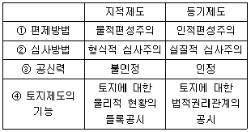
- ①
- ②
- ③
- ④
(정답률: 알수없음)
64. 경계의 표시방법에 따른 지적제도의 분류가 옳은 것은?
- 세지적, 법지적, 다목적지적
- 2차원지적, 3차원지적
- 수평지적, 입체지적
- 도해지적, 수치지적
(정답률: 알수없음)
65. 토지조사사업 당시 사정에 대한 재경기관은?
- 지방토지조사위원회
- 도지사
- 임시토지조사국장
- 고등토지조사위원회
(정답률: 알수없음)
66. 신라의 토지측량에 사용된 구장산술의 방전장의 내용에 속하지 않는 토지형태는?
- 직전
- 양전
- 환전
- 구고전
(정답률: 알수없음)
67. 이기가 해학유서에서 수등이척제에 대한 개선으로 주장한 제도로서, 전지(田地)를 측량할 때 정방형의 눈들을 가진 그물을 사용하여 면적을 산출하는 방법은?
- 일자오결제
- 망척제
- 결부제
- 방전제
(정답률: 알수없음)
68. 토지조사사업 당시 지목 중 면세지에 해당되지 않는 것은?
- 사사지
- 분묘지
- 철도용지
- 수도선로
(정답률: 알수없음)
69. 다음 중 오늘날의 등기와 동일한 효력을 가진 증서가 아닌 것은?
- 입안(入眼)
- 문기(文記)
- 지계(地契)
- 토지가옥증명
(정답률: 알수없음)
70. 다음 중 근세 유럽 지적제도의 효시로서, 근대적 지적제도가 가장 빨리 도입된 나라는?
- 네덜란드
- 일본
- 대만
- 프랑스
(정답률: 알수없음)
71. 특별한 기준을 두지 않고 당사자의 신청순서에 따라 토지등록부를 편성하는 방법은?
- 물적 편성주의
- 인적 편성주의
- 연대적 편성주의
- 인적ㆍ물적 편성주의
(정답률: 알수없음)
72. 다음 중 토지조사사업 당시 별필(別筆)로 하였던 경우에 해당하지 않는 것은?
- 분쟁지로서 명확한 경계나 권리 한계가 불분명한 것
- 도로, 하천, 구거 등에 의하여 자연으로 구획된 것
- 전당권 설정의 증명이 있는 경우 그 증명마다 별필로 취급한 것
- 조선총독부가 지정한 개인 소유의 공공 토지
(정답률: 알수없음)
73. 일제시대의 간주지적도에 등록된 토지의 대장을 일반 토지대장과는 별도로 작성한 것의 명칭으로 옳지 않은 것은?
- 산 토지대장
- 별책 토지대장
- 을호 토지대장
- 증보 토지대장
(정답률: 알수없음)
74. 다음 중 토렌스시스템의 기본이론이 아닌 것은?
- 거울이론
- 보장이론
- 커튼이론
- 보험이론
(정답률: 알수없음)
75. 토지의 개별성ㆍ독립성을 인정하여 물권객체로 설정할 수 있도록 다른 토지와 구별되게 한 토지표시 사항은?
- 지번
- 지목
- 면적
- 토지등급
(정답률: 알수없음)
76. 지적재조사사업의 목적으로 가장 거리가 먼 것은?
- 지적불부합지 문제 해소
- 지적공부의 공신력 향상
- 경계복원 능력의 향상
- 지적기구와 인력의 확장
(정답률: 알수없음)
77. 다음 중 지적도ㆍ임야도의 경계와 가장 관계가 깊은 것은?
- 토지 소유권의 범위
- 지적 통계
- 토지의 이용
- 토지의 지목
(정답률: 알수없음)
78. 지적의 발생설 중 가장 중추적이며 지배적인 학설은?
- 과세설
- 치수설
- 지배설
- 침략설
(정답률: 알수없음)
79. 신라시대의 장적문서(帳籍文書)에 대한 설명으로 옳지 않은 것은?
- 현ㆍ촌명 및 촌락의 영역과 토지의 종목, 면적 등이 기록되어 있다.
- 뽕나무, 백자목(柏子木), 추자목(楸子木) 등의 수량이 기록되어 있다.
- 우리나아의 지적기록 중 가장 오래된 자료이지만 현존하지 않는다.
- 장적문서의 기록에 남아 있는 지역은 지금의 청주 지방인 서원경 부근의 4개 촌락이다.
(정답률: 알수없음)
80. 다음 지적측량의 행정적 효력 중 지적공부에 유효하게 등록된 표시사항은 일정한 기간이 경과된 후 그 상대방이나 이해관계인 그 효력을 다툴 수 없으며 소관청 자체도 특별한 사유가 있는 경우를 제외하고 그 성과를 변경할 수 없는 처분행위의 효력은?
- 구속력
- 확정혁
- 강제력
- 추정력
(정답률: 알수없음)
5과목: 지적관계법규
81. 다음 중 토지의 이동신청에 관한 설명으로 옳지 않은 것은?
- 토지소유자는 합병하고자 하는 토지가 등기된 토지와 등기되지 아니한 토지인 경우에 합병신청을 할 수 없다.
- 도시관리계획선에 따라 토지를 분할하는 경우에는 반드시 지목변경 후 등록전환을 신청할 수 있다.
- 토지소유자는 토지이용상 불합리한 지상경계를 시정하기 위한 경우 분할을 신청할 수 있다.
- 소관청은 시ㆍ도지사로부터 축척변경승인을 얻은 때에는 축척변경의 시행에 따른 청산방법을 20일 이상 고고하여야 한다.
(정답률: 알수없음)
82. 지적측량업의 등록기준 중 인적 조건에 충족하는 경우는?
- 1년 이상의 지적측량경력을 가진 지적기술사 1인을 포함한 5인의 지적기술자
- 5년 이상의 지적측량경력을 가진 지적기술사 2인을 포함한 6인의 지적기술자
- 7년 이상의 지적측량경력을 가진 지적기사자격 취득자 2인을 포함한 6인의 지적기술자
- 10년 이상의 지적측량경력을 가진 지적기사자격 취득자 2인을 포함한 7인의 지적기술자
(정답률: 알수없음)
83. 소관청이 도면의 관리상 필요하여 지번부여지역마다 일람도를 작성하는 경우 일람도의 축척은 그 도면 축척의 얼마로 하여야 하는가? (단, 도면의 장수가 많아서 1장에 작성할 수 없는 경우는 고려하지 않음)
- 도면축척의 5분의 1
- 도면축척의 10분의 1
- 도면축척의 15분의 1
- 도면축척의 20분의 1
(정답률: 알수없음)
84. 다음 중 지적법에 의한 지목의 구분이 옳지 않은 것은?
- 산업집적활성화 및 공장설립에 관한 법률 등 관계법령에 의한 공장부지 조성공사가 준공도니 토지는 “공장용지”로 한다.
- 고속도로 안의 휴게소 부지는 “도로”로 한다.
- 국토의 계획 및 이용에 관한 법률 등 관계법령에 의한 택지조성공사가 준공된 토지는 “대”로 한다.
- 온수ㆍ약수ㆍ석유류 등을 일정한 장소로 운송하는 송수관ㆍ송유관 및 저장시설의 부지는 “광천지”로 한다.
(정답률: 알수없음)
85. 부동산등기법상 등기전산정보자료를 이용하거나 활용하려는 자는 누구의 승인을 받아야 하는가?
- 법원행정처장
- 관할등기소장
- 지방법원장
- 법무부장관
(정답률: 알수없음)
86. 다음 중 지적측량업의 등록을 할 수 없는 사유(기준)에 대한 설명이 옳지 않은 것은?
- 금치산자 또는 한정치산자
- 형의 집행유예선고를 받고 그 유예기간이 경과되지 아니한 자
- 지적측량업의 등록이 취소된 후 2년이 경과되지 아니한 자
- 금고 이상의 실형을 선고받고 그 집행이 종료*집행이 종료된 것으로 보는 경우를 포함한다)되거나 집행이 면제된 날부터 2년이 경과되지 아니한 자
(정답률: 알수없음)
87. 토지이동에 따른 지적을 정리하는 경우 소관청이 직권으로 정정할 수 있는 대상이 아닌 것은?
- 지적공부의 재작성 당시 잘못 정리된 경우
- 지적측량성과와 다르게 정리된 경우
- 토지이동정리결의서의 내용과 다르게 정리된 경우
- 지적도에 등록된 필지 면적의 증감과 함께 경계의 위치가 잘못된 경우
(정답률: 알수없음)
88. 다음 중 분할에 따른 지상경계가 지상건축물을 걸리게 결정할 수도 있는 경우로 가장 거리가 먼 것은?
- 공공사업 등으로 인하여 지목이 학교용지로 되는 토지를 분할하는 경우
- 토지를 토지소유자의 필요에 의해 분할하는 경우
- 도시개발사업 등의 시행자가 사업지구의 경계를 결정하기 위하여 토지를 분할하고자 하는 경우
- 법원의 확정판결이 있는 경우
(정답률: 알수없음)
89. 축척변경에 의한 등기촉탁의 경우에 이해관계가 있는 제 3자의 승낙은 무엇으로 이에 갈음할 수 있는가?
- 지적공부 등본
- 관할 축척변경위원회의 의결서 정본
- 관할 법원 판결서의 정본
- 부동산등기부 등본
(정답률: 알수없음)
90. 국토의 계획 및 이용에 관한 법률상 시가화조정구역에 관한 설명이 옳지 않은 것은?
- 조사지역과 그 주변지역의 무질서한 시가화를 방지하고 계획적ㆍ단계적인 개발을 도모하기 위하여 지정한다.
- 대통령령이 정하는 시가화를 유보할 수 있는 기간은 5년 이상 20년 이내이다.
- 시가화조정구역의 지정은 국토해양부장관이 직접 하여야 하며, 관계 행정기관의 장의 요청에 의한 지정은 할 수 없다.
- 시가화조정구역의 지정에 관한 도시관리계획의 결정은 시가화유보기간이 끝난 날의 다음날부터 그 효력을 잃는다.
(정답률: 알수없음)
91. 다음 중 일람도를 제도하는 경우 붉은 색 0.2mm 폭의 2선으로 제도하여야 하는 것은?
- 지방도로
- 수도용지 중 선로
- 하천ㆍ구거
- 철도용지
(정답률: 알수없음)
92. 다음 중 지적법에 규정된 소관청의 정의에 따라, 소관청으로 보기 어려운 경우는?
- 청송군수
- 강남구청장
- 성남시장
- 마포구청장
(정답률: 알수없음)
93. 지적측량업자의 업무범위에 해당되지 않는 것은?
- 경계점좌표등록부가 비치된 지역에서의 지적측량
- 도시개발사업 등이 완료됨에 따라 실시하는 지적확정측량
- 경계점좌표등록부에 토지의 표시를 새로이 등록하기 위한 측량
- 도해 세부측량지역의 등록전환측량
(정답률: 알수없음)
94. 다음 중 지적공부의 “대장”으로만 짝지어진 것은?
- 토지대장, 임야도
- 대지권등록부, 지적도
- 경계점좌표등록부, 일람도
- 공유지연명부, 토지대장
(정답률: 알수없음)
95. 다음 중 미등기토지의 소유권 보존등기를 신청할 수 있는 자가 아닌 것은?
- 판결에 의하여 자기의 소유권을 증명하는 자
- 수용으로 인하여 소유권을 취득하였음을 증명하는 자
- 시ㆍ군ㆍ구의 장의 서면에 의하여 자기의 소유권을 증명하는 자
- 토지대장등본에 의하여 자기가 토지대장에 소유자로서 등록되어 있는 것을 증명하는 자
(정답률: 알수없음)
96. 다음 중 경계점좌표등록부의 등록사항이 아닌 것은?
- 토지의 소재
- 지번
- 좌표
- 경계
(정답률: 알수없음)
97. 다음 부동산등기법상의 내용 중 ()에 알맞은 말은?
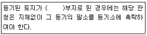
- 하천
- 도로
- 구거
- 수도용지
(정답률: 알수없음)
98. 국토의 계획 및 이용에 관한 법률상 토지 등의 수용 및 사용에 관한 설명이 옳지 않은 것은?
- 도시계획시설사업의 시행자는 도시계획시설사업에 필요한 토지ㆍ건축물 또는 그 토지에 정착된 물건을 수용할 수 있다.
- 도시계획시설사업의 시행자는 도시계획시설사업에 필요한 토지ㆍ건축물 또는 그 토지에 정착된 물건에 관한 소유권 외의 권리를 수용할 수 있다.
- 도시계획시설사업의 시행자는 사업시행을 위하여 특히 필요하다고 인정되면 도시계획시설에 인접한 토지에 정착된 물건을 일시 사용할 수 있다.
- 도시계획시설사업의 시행자는 사업시행을 위하여 특히 필요하다고 인정되면 도시계획시설에 인접한 토지에 정착된 물건에 관한 소유권을 일시 사용할 수 있다.
(정답률: 알수없음)
99. 다음 중 국토의 계획 및 이용에 관한 법률상 도시관리계획결정은 언제 그 효력이 발생하는가?
- 도시관리계획 결정고시일
- 도시관리계획 결정고시가 된 날의 다음 날
- 도시관리계획 결정고시가 된 날부터 3일 후
- 도시관리계획 결정고시가 된 날부터 5일 후
(정답률: 알수없음)
100. 다음 중 지적법과 동법 시행령 및 시행규칙에 따른 지적공부의 복구 및 복구절차 등에 관한 내용이 옳지 않은 것은?
- 지적공부를 복구하고자 하는 때에는 멸실ㆍ훼손 당시의 지적공부와 가장 부합된다고 인정되는 관계자료에 의하여 토지의 표시에 관한 사항을 복구하여야 한다.
- 소관청은 지적공부의 전부 또는 일부가 멸실ㆍ훼손된 때에는 지체없이 이를 복구하여야 한다.
- 지적공부를 복구함에 있어 소유자에 관한 사항은 부동산등깁나 법원의 확정판결에 의하여 복구하여야만 한다.
- 소관청은 지적공부를 복구하고자 하는 때에는 복구하고자 하는 토지의 표시 등을 시ㆍ군ㆍ구의 게시판에 7일 이상 게시하여야 한다.
(정답률: 알수없음)